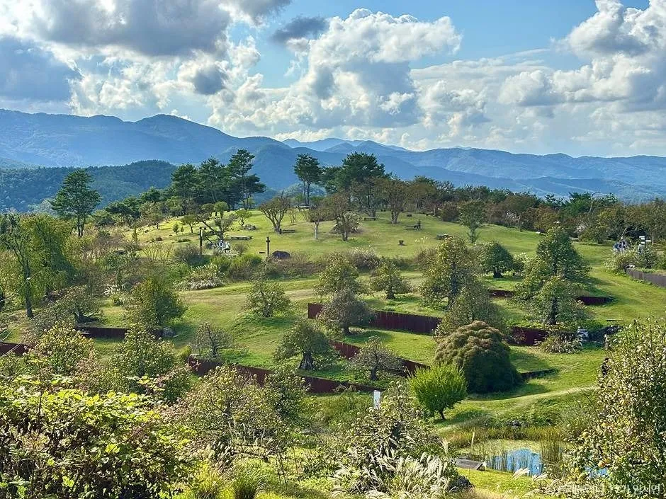
▲ 팔공산 지맥에 자리한 사유원의 언덕과 나무. 사전 예약을 해야 입장할 수 있다 사진=한국관광공사
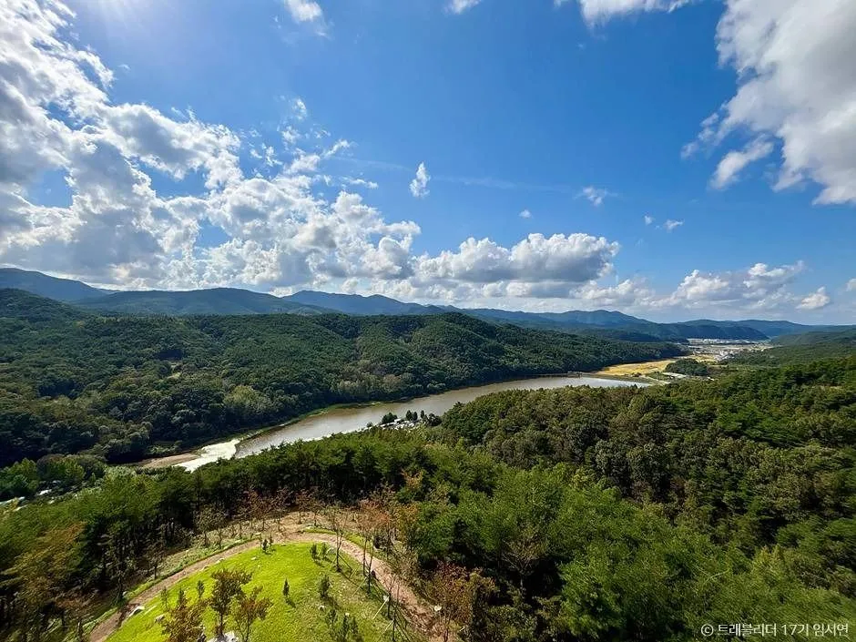
▲ 높은 지대에서 내려다본 사유원 일대의 계곡과 강줄기 사진=한국관광공사
1. 경북이 아니라 대구 — 군위군 주소부터 바로잡기
군위군은 2023년 7월 1일 경상북도에서 대구광역시로 편입돼, 지금은 '대구광역시 군위군'이 공식 주소입니다. 편입 법률에 따라 2023년 말까지는 경북도 조례가 적용되는 경과 기간이 있었고, 2024년 1월 1일부터 대구시 조례가 전면 적용됐습니다. 한국관광공사와 군위군 안내 모두 사유원을 '대구광역시 군위군 부계면', 화본역을 '대구광역시 군위군 산성면'으로 표기합니다.
면 이름도 바뀌었습니다. 인각사가 있는 고로면은 2021년 1월 1일 '삼국유사면'으로 이름을 바꿨습니다. 옛 자료에는 아직 고로면으로 적힌 곳이 있어 내비게이션에서는 도로명 주소를 그대로 입력하는 편이 안전합니다.
이 코스는 예약제 정원 사유원에서 반나절을 보낸 뒤, 차로 10분 거리의 폐역 화본역과 삼국유사 마을을 도는 구성입니다. 사유원 공식 홈페이지의 주변 관광 안내에도 화본역이 '사유원에서 10분(7km)' 거리로 올라 있습니다.
📍 왜 이 조합인가
사유원은 사전 예약제로 운영되는 조용한 산지 정원이고, 화본역은 열차가 서지 않는 폐역이지만 옛 간이역 풍경이 남은 곳입니다. 관람 성격이 정반대여서 하루에 묶으면 대비가 뚜렷합니다.
대구 근교 자연 코스가 궁금하다면 국립공원 팔공산 케이블카 기사도 함께 참고하세요. 사유원이 팔공산 지맥에 있어 두 코스를 이어 잡을 수 있습니다.
2. 사유원 — 팔공산 지맥 70만㎡에 만든 '사색의 정원'
사유원은 팔공산 지맥 약 70만㎡에 조성된 수목원이자 산지 정원으로, 공식 소개는 '사람이 만든 자연의 정수'를 내세웁니다. TC태창을 이끌었던 유재성 회장이 평생 아낀 바위와 소나무, 모과나무, 배롱나무를 들이고 건축가·조경가가 공간을 지었습니다. 공식 연혁상 2021년 9월 사전예약제로 개장했고, 2017년 부계수목원으로 등록됐습니다.
▲ 언덕과 나무, 먼 산줄기가 어우러진 사유원 일대 풍경 사진=한국관광공사
정원 곳곳에는 건축가들의 작품이 들어서 있어 '미술관 같은 정원'으로 불립니다. 공식 안내에 따르면 승효상 건축가의 현암·와사·첨단, 프리츠커상 수상자 알바로 시자의 소요헌·소대·내심낙원, 최욱 건축가의 가가빈빈 등이 있고, 정영선 조경가가 유원·풍설기천년 등을 설계했습니다. 풍설기천년에는 오랜 세월을 견딘 모과나무 108그루가 모여 있습니다.
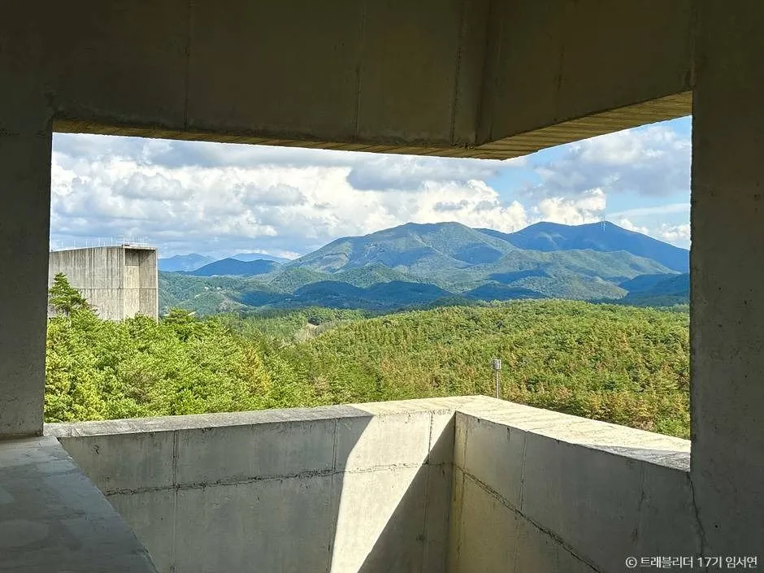
▲ 콘크리트 구조물 틀 너머로 먼 산이 내다보이는 전망 지점 사진=한국관광공사
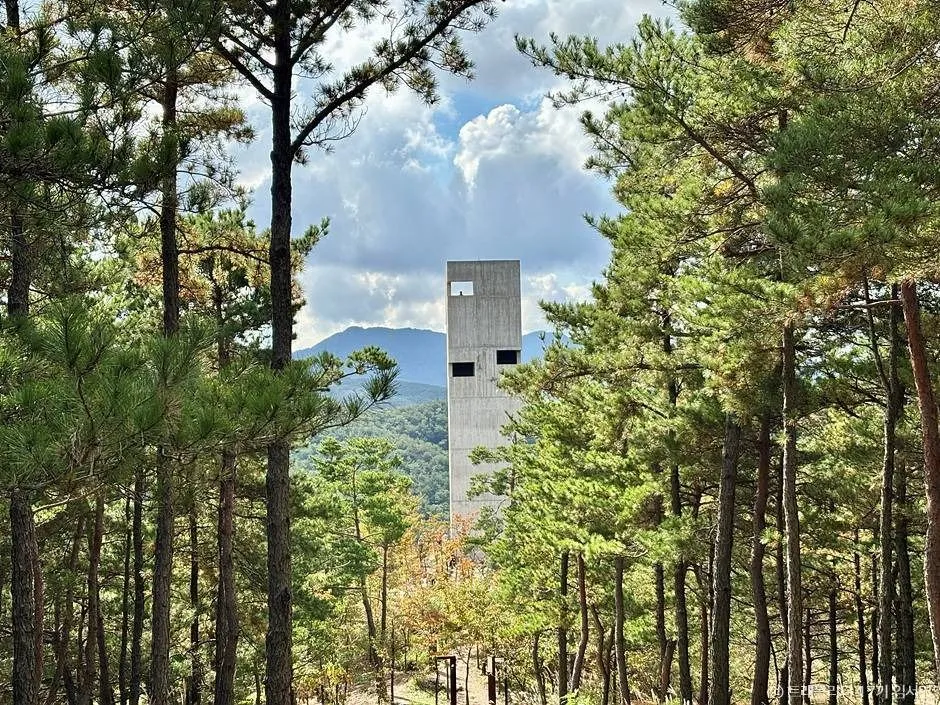
▲ 소나무 숲 사이로 멀리 콘크리트 구조물이 보이는 풍경 사진=한국관광공사
| 코스 | 소요시간 | 특징 |
|---|---|---|
| 목련길 | 약 1시간 | 치허문~소요헌~소대. 20.5m 높이 소대에서 내려다보는 조망이 핵심 |
| 백일홍길 | 약 2시간 | 소요헌·소대 이후 풍설기천년, 별유동천 백일홍 고목, 현암 |
| 모과길·고송길 | 공식 페이지에서 소요시간 확인 필요 | 모과나무·고송 중심 코스 |
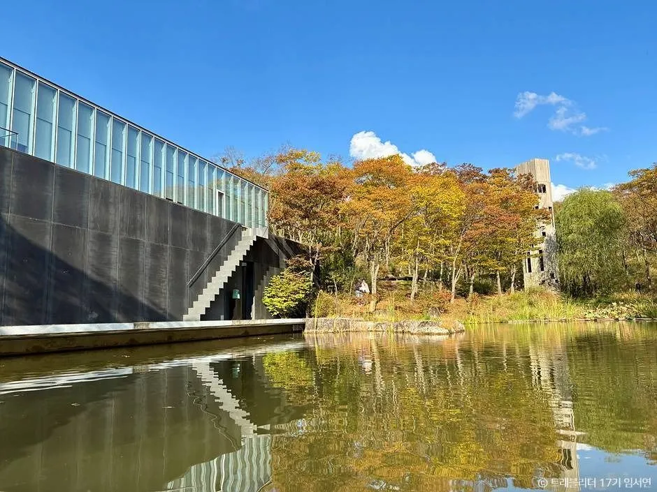
▲ 연못과 콘크리트 벽면, 물든 나뭇잎이 어우러진 정원 한 켠 사진=한국관광공사
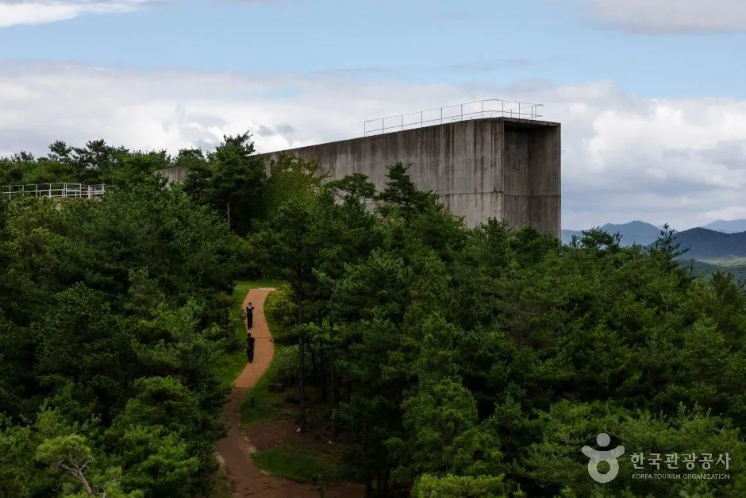
▲ 숲 사이로 난 좁은 흙길. 사유원 산책로는 오르막이 있다 사진=한국관광공사
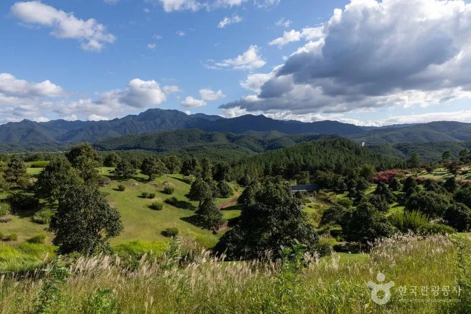
▲ 초록 능선과 먼 산줄기가 이어지는 사유원 일대 조망 사진=한국관광공사
3. 예약 방법·입장료·운영시간 — 사유원 공식 예약 사이트 기준
사유원은 사전 예약제로 운영됩니다. 공식 예약 안내에 따르면 관람은 방문일 하루 전, 식사 포함 예약은 방문일 이틀 전까지 신청할 수 있고, 관람에 한해 잔여석이 있으면 당일 입장도 가능합니다(사유원 도착순으로 잔여석 결제·입장).
| 항목 | 내용 |
|---|---|
| 주소 | 대구광역시 군위군 부계면 치산효령로 1176 (한국관광공사 자료는 1150 표기, 내비게이션은 '사유원' 검색 권장) |
| 관람 시간 | 09:00~18:00 (공식 예약 안내). 관광공사 자료는 입장 마감 15:00로 표기 |
| 휴관일 | 매주 월요일과 설·추석 당일. 월요일이 공휴일이면 정상 운영하고 다음 평일에 휴원 |
| 관람료(성인) | 평일 50,000원, 주말·공휴일 69,000원 |
| 관람료(어린이) | 평일 45,000원 (주말·공휴일은 예약창에서 확인) |
| 예약 | 관람은 전날까지, 식사 포함은 2일 전까지 / 잔여석 당일 입장 가능 |
| 취소·환불 | 결제 당일 23시 59분 전 취소 시 수수료 면제. 우천 환불 불가(시간당 강우량 20mm 이상, 풍속 14m/s 이상 천재지변은 예외) |
| 주차 | 가능 (한국관광공사) |
| 문의 | 054-383-1278 / contact@sayuwon.com |
위 요금은 2026년 9월 29일 기준 공식 예약 상품 목록에서 확인한 값이며, 시즌·상품에 따라 달라질 수 있습니다.
✅ 공식 이용 규정 (예약 화면 안내)
· 산속 정원이라 경사가 가파르고 도보로만 이용할 수 있는 공간이 대부분이며, 휠체어·목발·지팡이 사용자는 이용이 어렵다고 안내함
· 정해진 관람 코스 외에는 관람 불가, 퇴장 후 재입장 불가
· 금연(전자담배 포함)·금주 구역, 외부 음식 반입 불가, 반려동물 입장 불가
· 돗자리·놀이기구·체육용품(공, 자전거, 킥보드, 배드민턴 등) 반입 불가
· 동식물·토석 채취 금지, 야생동물(고라니·멧돼지·뱀 등)이 나타날 수 있음
식사 포함 상품도 공식 예약창에서 함께 판매됩니다. 2026년 9월 29일 기준 관람+사담 다이닝 런치·디너는 평일 130,000원·주말/공휴일 149,000원(관람료 포함), 관람+몽몽마방 '사유의 밥상'은 평일 88,000원·주말/공휴일 107,000원(관람료 포함)입니다. 선셋 다이닝 투어(144,000원)는 14:00부터 입장할 수 있다고 안내돼 있습니다.
| 시설 | 설명 |
|---|---|
| 사담 | 양식 코스 레스토랑, 실내 60석 |
| 가가빈빈 | 팔공산 비로봉을 바라보는 북카페 (최욱 건축가 설계) |
| 현암 티하우스 | 숲 조망 티 하우스, 실내 6석 |
| 몽몽마방·몽몽차방 | 사유원 외부에 위치한 한식당·모과 음료 갤러리 카페 |
관람 소요시간은 후기 기준 4~5시간으로 소개되지만 공식 수치는 아니므로, 코스별 시간(목련길 1시간, 백일홍길 2시간)을 참고해 일정을 잡으세요.
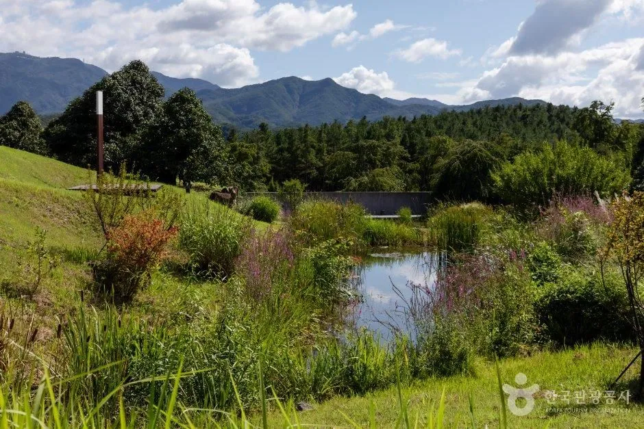
▲ 연못과 풀숲, 산줄기가 겹쳐 보이는 정원 풍경 사진=한국관광공사
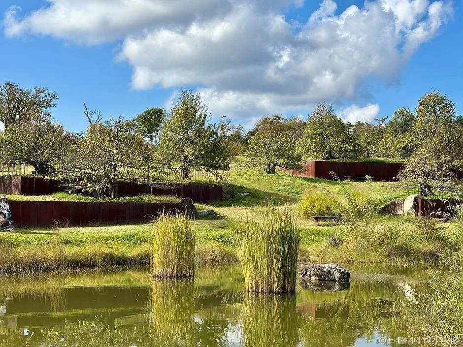
▲ 갈대가 자라는 연못과 붉게 녹슨 철판 벽이 어우러진 정원 사진=한국관광공사
4. 가는 길과 주차 — 서울 3시간 30분, 대구에서 40~50분
자가용은 상주영천고속도로 동군위IC로 나와 '팔공산·부계' 방면으로 진입하는 경로를 사유원이 공식 안내합니다. 서울에서는 영동고속도로→중부내륙고속도로→상주영천고속도로를 타고 약 3시간 30분, 부산·대전은 약 2시간, 광주는 약 2시간 50분, 대구에서는 40~50분으로 소개됩니다.
| 출발지 | 경로 | 소요시간 |
|---|---|---|
| 서울 | 영동고속도로→중부내륙→상주영천→동군위IC | 약 3시간 30분 |
| 대전 | 경부→당진영덕→상주영천→동군위IC | 약 2시간 |
| 부산 | 경부→상주영천→동군위IC | 약 2시간 |
| 광주 | 호남→광주대구→중부내륙지선→칠곡IC 경유 | 약 2시간 50분 |
| 대구 | 팔공산 방면→가좌교차로→부계교차로 | 약 40~50분 |
| 동대구역·대구공항 | 택시 | 약 45분(32km) / 약 40분(29km) |
대중교통은 급행 9번 등 시내버스가 있지만 배차 간격이 평일·주말 모두 120분 안팎이고 정류장에서 500m~2.8km를 걸어야 하므로 자가용이 현실적입니다. 버스 시간표는 대구 버스정보시스템에서 확인할 수 있습니다.
5. 화본역 — 열차가 서지 않아도 사람이 몰리는 폐역
화본역은 2024년 12월 폐역이 됐지만 지금도 옛 간이역 풍경을 보러 오는 사람이 많습니다. 한국관광공사 자료에 따르면 역사는 1936년 준공돼 1938년 12월 1일 중앙선 보통역으로 영업을 시작했고, 중앙선 복선전철 개통으로 폐역이 됐습니다. 2025년 10월 경북일보 보도는 군위군이 국가철도공단·한국철도공사와 협의해 역과 부지를 임대하고 주민·관광객에게 무료 개방하고 있다고 전했습니다.
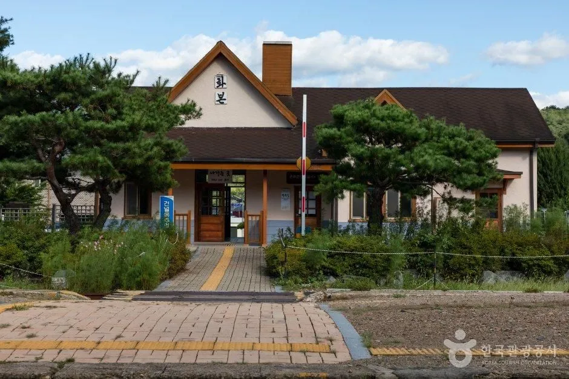
▲ 역 이름이 걸린 화본역 역사 정면. 앞에 소나무와 보도가 있다 사진=한국관광공사
역의 상징은 높이 25m, 지름 4m로 소개되는 급수탑입니다. 증기기관차에 물을 공급하던 시설로 한국철도공사 선정 준철도기념물이며, 역 주변에는 1930~40년대 지어진 옛 철도 관사촌도 남아 있습니다.
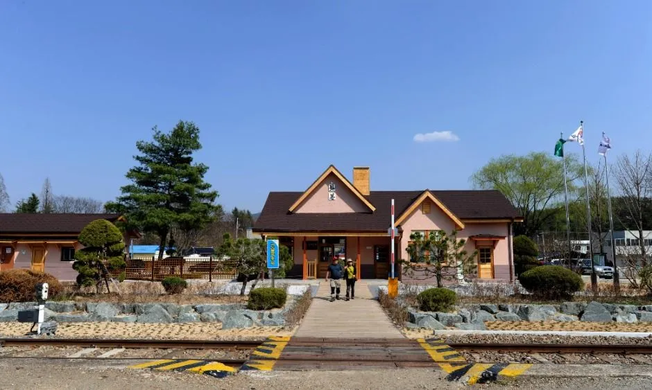
▲ 소나무가 있는 앞마당과 건널목 너머로 보이는 화본역 역사 사진=한국관광공사
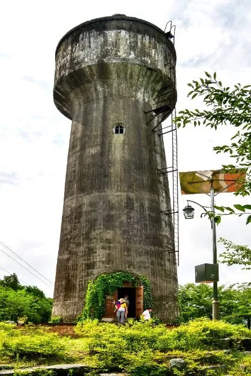
▲ 증기기관차 시절 물을 공급하던 급수탑을 가까이서 올려다본 모습 사진=한국관광공사
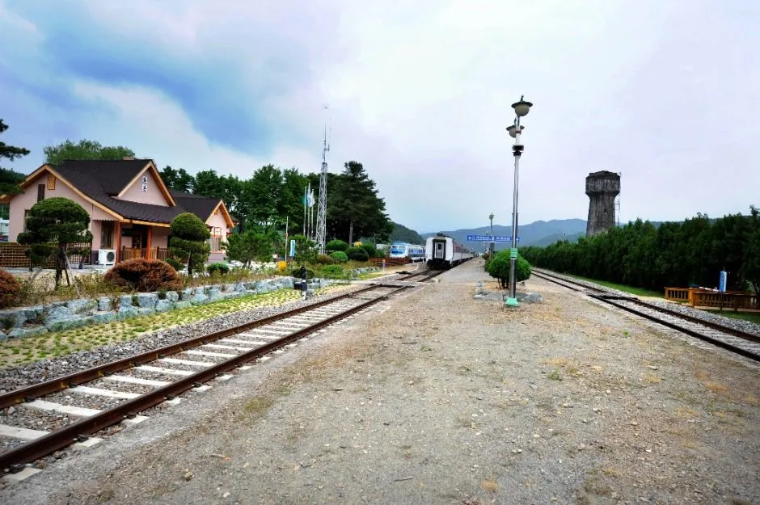
▲ 철길과 승강장이 이어지는 화본역 구내. 멀리 급수탑이 보인다 사진=한국관광공사
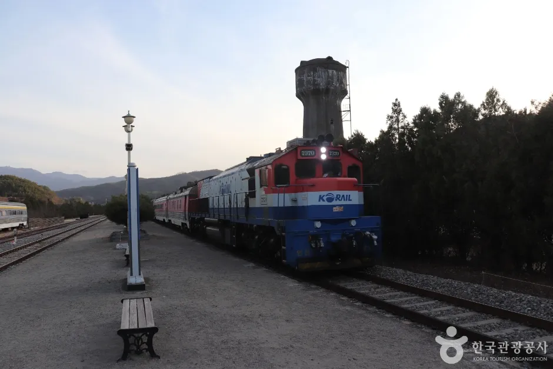
▲ 선로 위에 세워진 기관차와 뒤편 급수탑 사진=한국관광공사
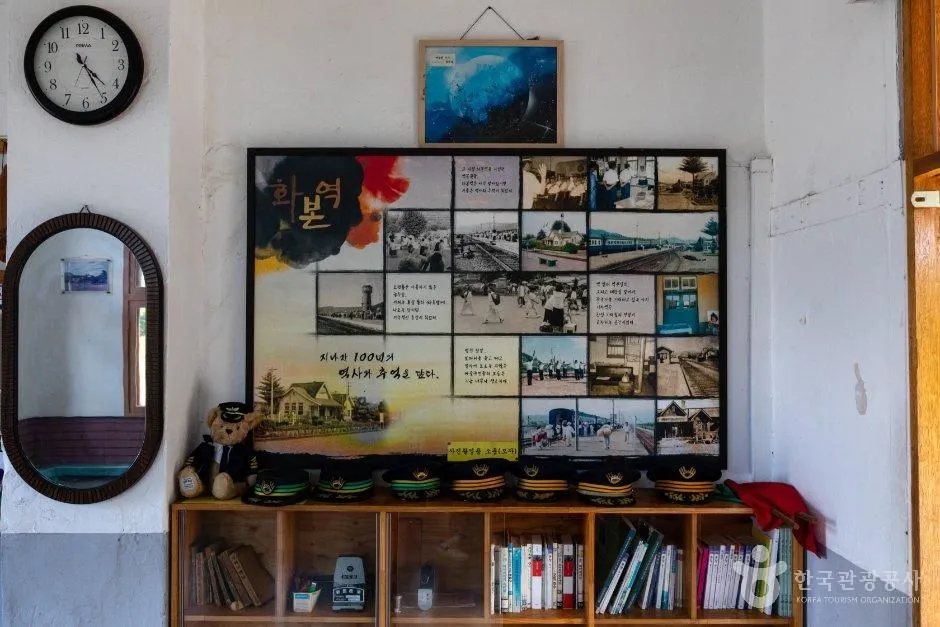
▲ 옛 사진 패널과 책장이 놓인 역 대합실 내부 사진=한국관광공사
| 항목 | 내용 |
|---|---|
| 주소 | 대구광역시 군위군 산성면 산성가음로 711-9 (화본마을 722) |
| 상태 | 2024년 12월 폐역, 군위군이 임대해 무료 개방(2025년 10월 보도 기준) |
| 개방시간 | 09:00~17:00 (한국관광공사 기준), 연중무휴로 표기 |
| 주차 | 가능 |
| 문의 | 군위군 문화관광과 054-380-6065 (관광공사 표기) / 054-380-6230 (군위군 안내) / 체험 054-382-3361 |
✅ 자료 상충 주의
화본마을 관광공사 소개문에는 아직 '무궁화호가 운행 중'이라는 문장이 남아 있지만, 같은 공사의 화본역 소개문은 2024년 12월 폐역이라고 적고 있습니다. 이 기사는 폐역 기준으로 서술했습니다.
6. 화본마을 — 삼국유사 벽화와 옛 가게 골목, 옛 학교 체험
화본마을에는 삼국유사 내용을 담은 벽화가 마을 곳곳에 그려져 있습니다. 일연 스님이 군위에서 삼국유사를 집필했다는 점 때문에 군위는 '삼국유사의 고장'으로 불립니다. 역 앞에는 2006년 세워진 간이역 시비(박해수 시인)도 있습니다.
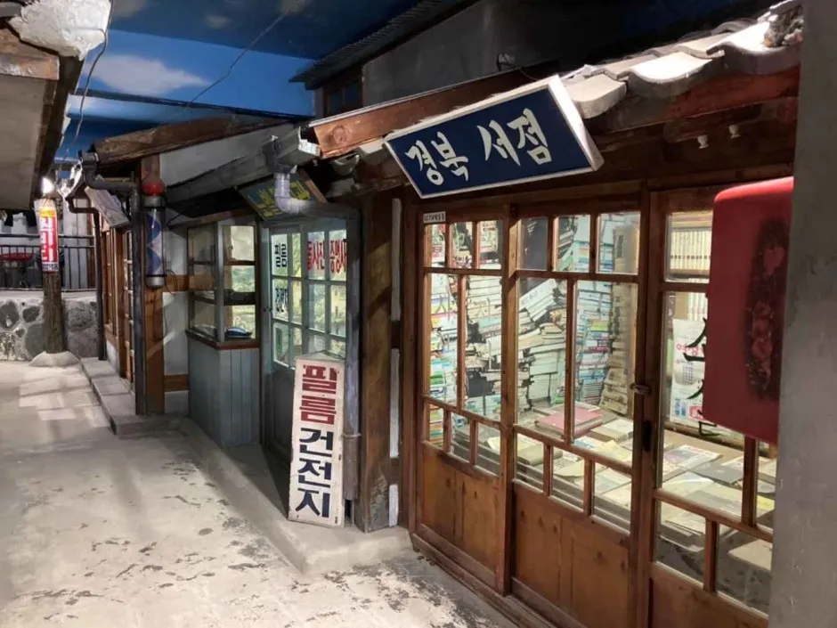
▲ 옛 간판과 진열장이 남은 마을 상점 골목 사진=한국관광공사
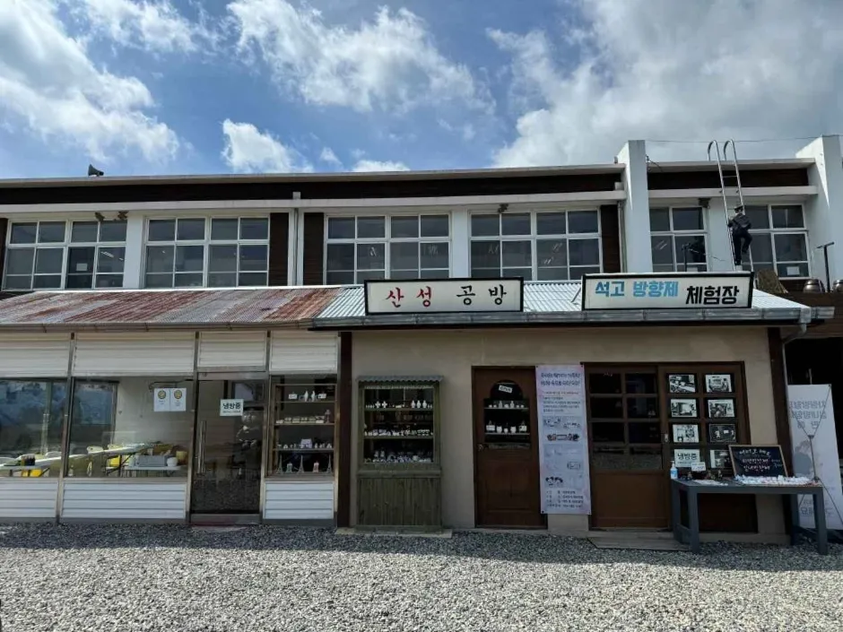
▲ 낮은 건물에 간판이 나란히 붙은 화본마을 거리 사진=한국관광공사
폐교를 고쳐 1970년대 마을을 재현한 '엄마아빠 어렸을 적에'도 이 마을의 대표 공간입니다. 한국관광공사 자료 기준으로 옛날 교실 체험, 옛날 거리, 달고나·야생화 체험 등을 할 수 있습니다.
| 항목 | 내용 |
|---|---|
| 박물관 운영 | 3~10월 09:00~18:00, 11~2월 09:00~17:00, 연중무휴 |
| 체험 프로그램 | 로봇시계 만들기, 우산 꾸미기, 팔찌 꾸미기, 야생화 체험 등 |
| 단체 예약 | 주중 체험은 20명 이상, 일주일 전 예약 필수 |
| 관람료 | 일부 자료에 성인 3,000원 안팎으로 소개되나 공식 확인 필요 |
| 문의 | 054-382-3361 |
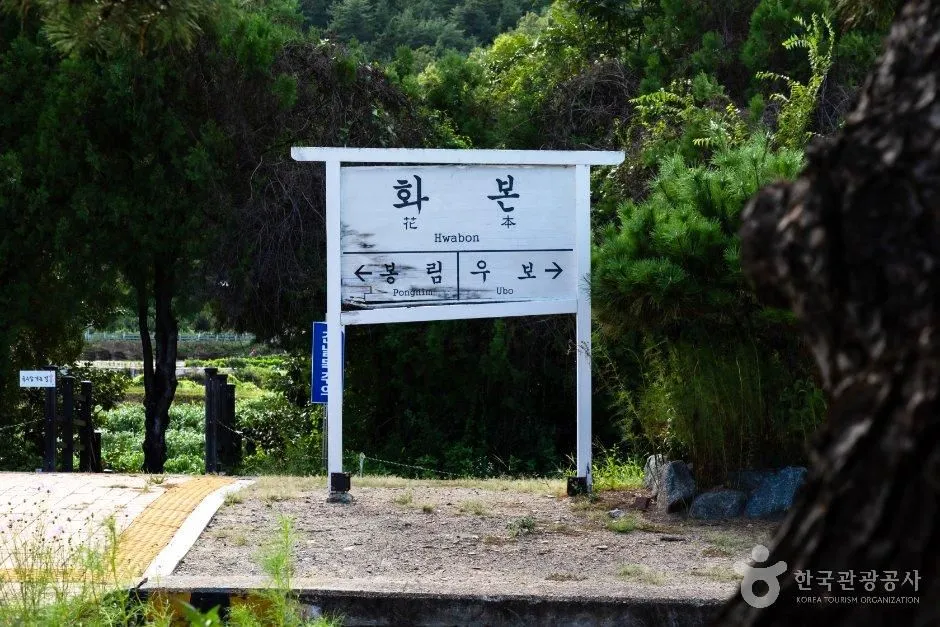
▲ 역 이름이 적힌 표지판과 선로가 있는 승강장 끝 사진=한국관광공사
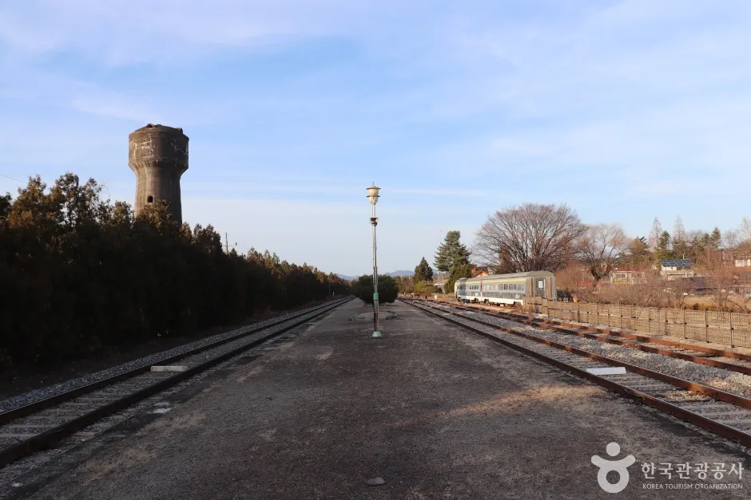
▲ 곧게 뻗은 선로 왼편으로 급수탑이 보이는 화본역 구내 사진=한국관광공사
7. 삼국유사면·인각사·삼국유사 테마파크 — 코스를 넓히고 싶다면
인각사는 일연 스님이 삼국유사를 집필한 절터로 소개되는 곳입니다. 최신 주소는 '군위군 삼국유사면 삼국유사로 250'이며, 한국관광공사 자료 기준 상시 개방·연중무휴로 표기돼 있습니다(문의 054-383-1161).
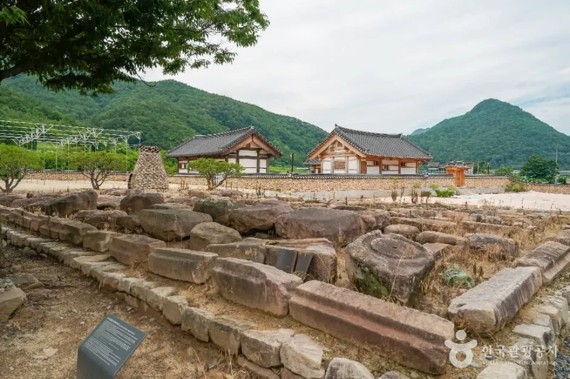
▲ 돌 유구가 남은 터 너머로 전통 건물이 보이는 인각사 일대 사진=한국관광공사
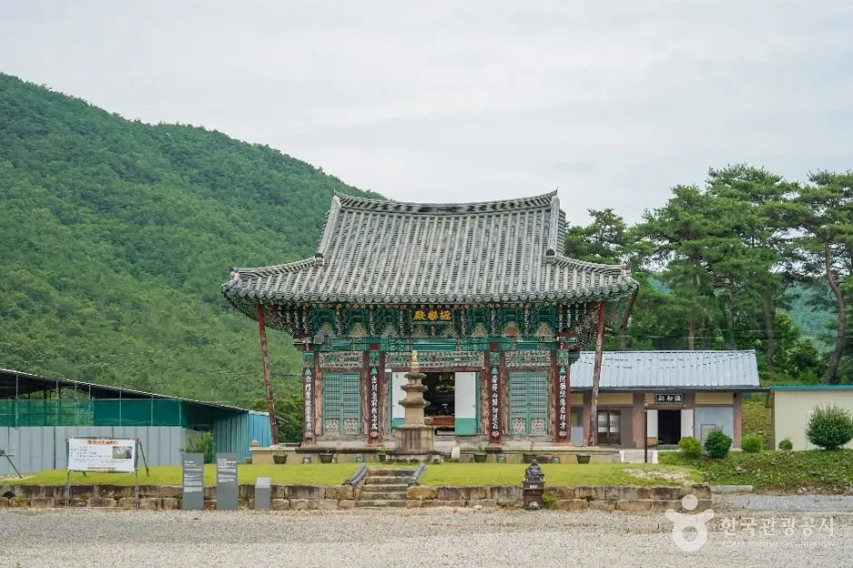
▲ 산을 배경으로 선 단청 전각과 앞마당 사진=한국관광공사
삼국유사 테마파크는 삼국유사면이 아니라 의흥면 일연테마로 100에 있습니다. 운영 시간은 10:00~18:00(매표 마감 17:00), 매주 월요일과 1월 1일 휴장이며 월요일이 공휴일이면 개장합니다. 해룡열차는 하절기(3~10월) 10:00~18:00, 동절기(11~2월) 10:00~17:00에 운행하고 탑승 횟수는 무제한입니다.
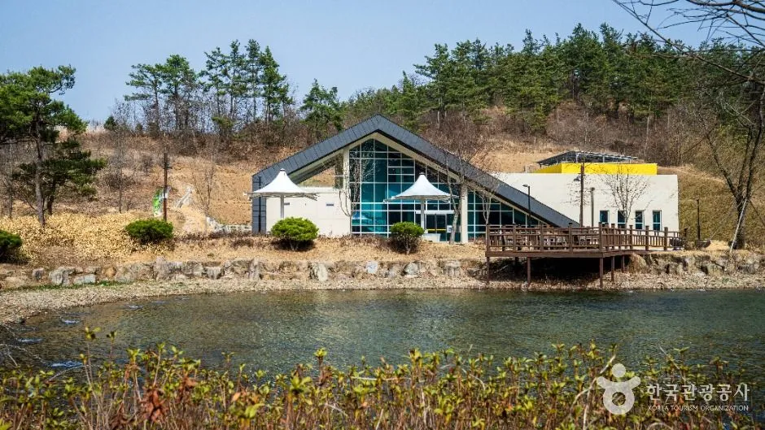
▲ 연못 뒤로 건물 지붕이 보이는 삼국유사 테마파크 일대 사진=한국관광공사
| 구분 | 성인 | 청소년/어린이 |
|---|---|---|
| 일반 입장권 | 9,000원 | 8,000원 |
| 입장+열차 | 11,000원 | 10,000원 |
| 입장+슬라이드 | 12,500원 | 11,500원 |
| 입장+슬라이드+열차 | 15,000원 | 14,000원 |
| 대구경북·군위 패키지 할인 요금이 별도로 있으며, 36개월 미만·국가유공자·장애인 복지카드 소지자 등은 입장료 면제(증빙 필요) | ||
8. 사유원 주변 — 한밤마을·창평지 등 10분 안팎 코스
사유원 공식 홈페이지는 주변 관광지를 차량 이동 시간과 함께 안내합니다. 가장 가까운 곳은 1분 거리(430m)의 창평지 생태공원이고, 한밤돌담마을이 8분(7km), 제2석굴암(군위삼존석굴)이 11분(9km)입니다.
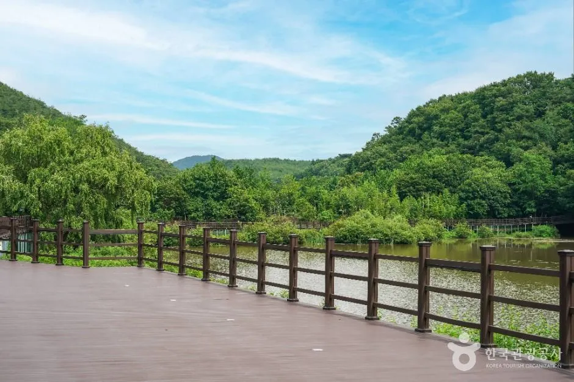
▲ 저수지 가장자리를 따라 이어진 나무 데크 산책로 사진=한국관광공사
창평지 생태공원은 농업용수용 저수지 둘레에 1.8km 나무 데크 탐방로를 조성한 곳입니다. 한국관광공사 자료에 따르면 밤에는 반딧불을 연상시키는 레이저 조명이 켜지며, 상시 개방·주차 가능입니다.
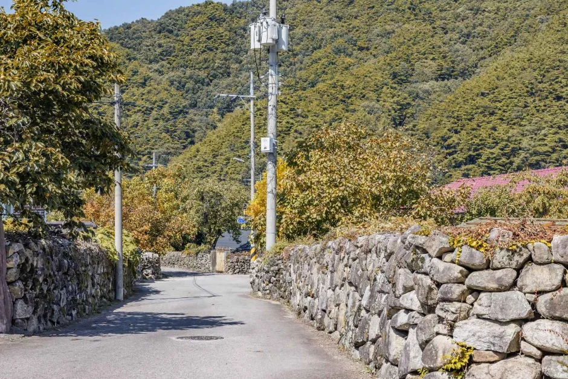
▲ 돌담이 이어진 한밤마을 길 사진=한국관광공사
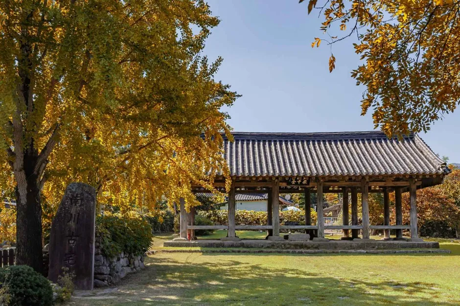
▲ 노랗게 물든 나무 옆에 서 있는 한밤마을의 기와 정자 사진=한국관광공사
한밤마을은 1,000년 세월에도 10리 돌담과 고택이 보존된 전통마을로 소개됩니다. 한국관광공사는 돌담이 1930년 대홍수 때 떠내려온 돌로 쌓은 것으로 알려졌고 이으면 약 6.5km에 달한다고 소개합니다. 상시 개방·주차 가능합니다.
| 장소 | 사유원에서 | 특징 |
|---|---|---|
| 창평지 생태공원 | 1분(430m) | 1.8km 평탄한 데크 산책로 |
| 한밤돌담마을 | 8분(7km) | 돌담과 고택이 남은 전통마을 |
| 화본역 | 10분(7km) | 간이역 풍경과 급수탑 |
| 제2석굴암(군위삼존석굴) | 11분(9km) | 국보 제109호 |
| 리틀포레스트 촬영지 | 20분(14km) | 영화 속 혜원의 집이 있는 우보면 미성5길 58-1 |
| 팔공산 하늘정원 | 25분(17km) | 순환도로 단풍 드라이브 |
🍂 가을 방문 팁
· 사유원 관람은 코스별 1~2시간이 걸리므로 오전 예약을 잡고 오후에 화본역으로 이동하는 순서가 무난합니다.
· 화본역 개방은 09:00~17:00로 소개되니 해가 짧아지는 10월 이후에는 오후 4시 전에 도착하세요.
· 사유원은 우천 시 환불이 안 되므로 예약 전 일기예보를 확인하세요.
한눈에 보는 요약
· 군위군은 2023년 7월 1일 대구광역시로 편입, 고로면은 2021년 삼국유사면으로 개칭
· 사유원은 사전 예약제, 관람 09:00~18:00, 월요일·설·추석 휴관, 성인 평일 50,000원·주말 69,000원
· 예약은 전날까지(잔여석 당일 입장 가능), 반려동물·외부 음식·재입장 불가
· 화본역은 2024년 12월 폐역, 급수탑·역사·삼국유사 벽화가 남은 무료 개방 명소
· 사유원↔화본역은 차로 약 10분(7km)